-
使用vue构造界面，使用stylus编写样式，并使用webpack进行打包。
难点在于：刚开始安装了最新版本的webpack（4.6.0），用extract-text-webpack-plugin进行样式分离打包，而v4已经有了新的mini-css-extract-plugin插件了，所以说要经常关注更新，不能让自己落后。
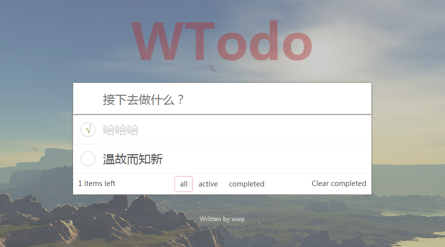 -
用H5的audio标签写的一个音频组件，放弃audio自带的控件，通过自己写的控件来获取音频的信息并控制音频的播放。
难点在于：ios10和ios11是点了播放按钮后才开始加载音频，导致出现时间延迟。
解决方法：通过判断音频的readyState，若小于2则说明当前播放位置的数据是不可用的，故加个loading效果。通过判断音频的canplay去掉loading效果，注意ios10和ios11执行的是canplaythrough事件。
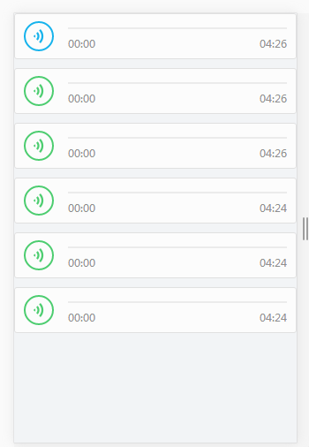音频组件
2017.11 -
使用微信小程序API做的一个商城小程序项目。
通过app.json来对当前小程序进行全局配置，包括所有页面路径、界面表现、底部tab等，通过project.config.json进行工具配置，WXML充当html的角色，WXSS充当css的角色，以及通过js进行逻辑交互。
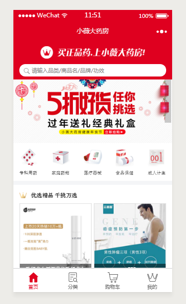商城小程序
2017.11 -
企业健康管家是使用h5+css3开发的一个移动端项目，产品包含两个主题色，默认蓝色，个人中心和健康模块采用红色。使用jq制作交互效果，使用swiper实现轮播图，使用echarts制作图表，图标使用阿里云矢量图标。
企业健康管家
2017.10 -
爱健康是使用h5+css3开发的一个移动端项目，产品分为医生端、患者端和上门服务系统三大块。使用jq制作交互效果，使用swiper实现轮播图，使用echarts制作图表，图标使用阿里云矢量图标。
爱健康
2017.6 -
健康之路招聘系统个pc端项目，兼容到ie8
健康之路招聘系统
2017.5 -
福建省地震局是个响应式项目。响应式布局使用foundation,主题样式使用less,地图使用百度地图api，轮播图使用swiper,交互效果使用jquery。
此项目导入公司cms平台，并参与了部分实施。
难点在于：轮播图采用大图和小图双向绑定，并且在ipad等设备上横竖屏切换时，小图的位置由大图的侧边转到大图的下方，这导致小图的滑动方向产生了变化。
解决方法：通过resize判断横竖屏切换，并重新设置小图的滑动方向。
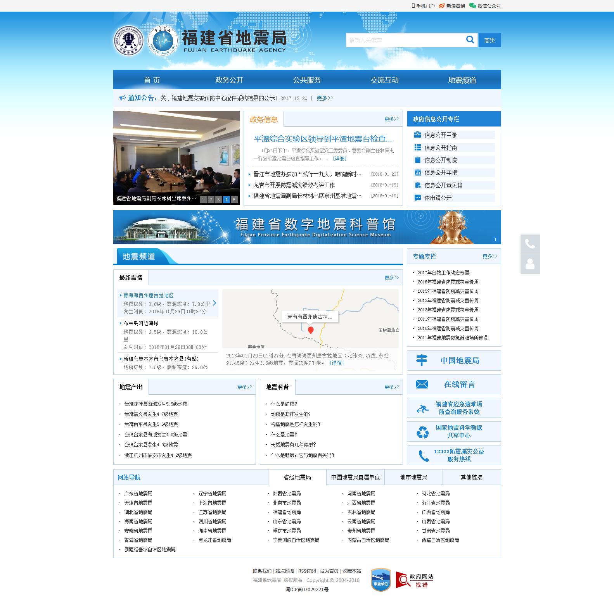福建省地震局
2016.12 -
福州山水河广告有限公司项目是个广告类电商网站。响应式布局使用foundation,轮播图使用swiper。
难点在于：此项目无设计稿。
解决方法：参考其他广告类网站。
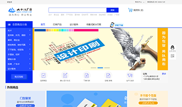福州山水河广告有限公司
2016.11.02 -
topkeeping是个在国外批发鞋子的电商网站。响应式布局使用foundation,图片放大使用jqzoom。
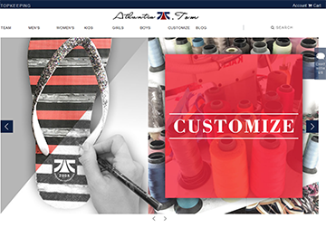topkeeping
2016.09 -
模仿花瓣网做的瀑布流页面。响应式布局使用foundation，动画效果使用masonry，使用json制造假数据，并使用ajax请求数据。
难点在于：实现同一个页面三个瀑布流的共存。
解决方法：使用三个id,分别请求不同的json数据。
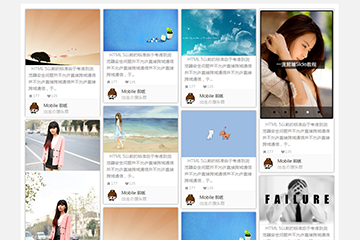瀑布流
2016.06.03 -
个人主页共三套模板。这三套模板共用一个html，只是样式不同。可变换布局和主题。
难点在于：使用同一套html会产生极大的冗余。
个人主页一
2016.11.29 -
个人主页共三套模板。这三套模板共用一个html，只是样式不同。可变换布局和主题。
难点在于：使用同一套html会产生极大的冗余。
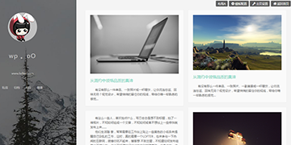个人主页二
2016.11.30 -
个人主页共三套模板。这三套模板共用一个html，只是样式不同。可变换布局和主题。
难点在于：使用同一套html会产生极大的冗余。
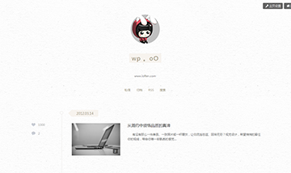个人主页三
2016.11.7 -
仿雷锋网页面是个响应式网站。
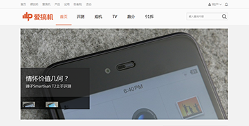仿雷锋网页面
2016.08.26 -
仿腾讯网页面。
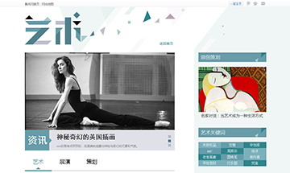仿腾讯网页面
2015.07.31